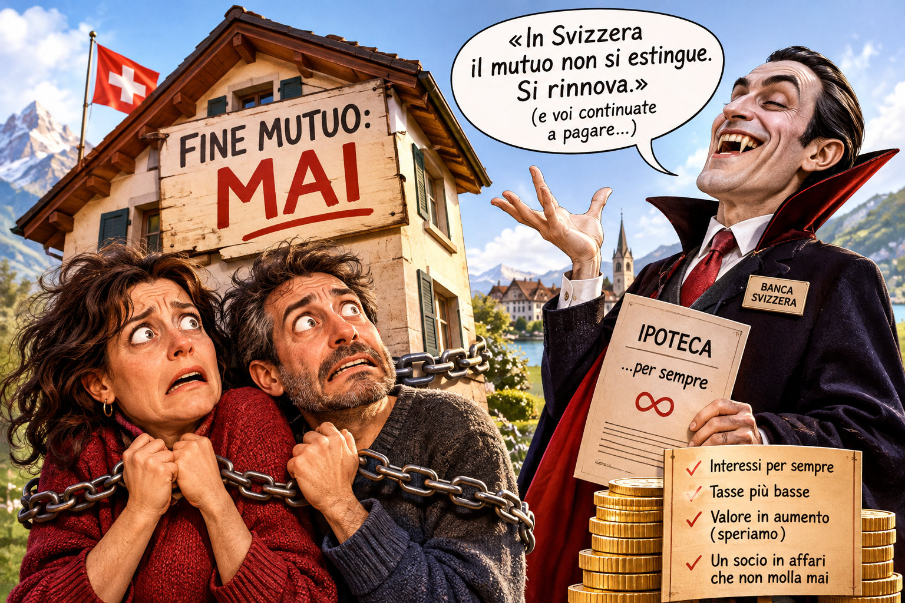

Mortgage: Never Ending
The Swiss Home-Buying Sentence: An Italian Woman's Perspective

One thing everybody knows, even the stones, is that «renting is throwing money away», so it's always better to buy a home as soon as you can.
So, after a few years in Switzerland, with some hard-earned savings tucked away and that much-coveted C residence permit finally in our hands, we thought we'd see whether buying a place might be an option. Okay, we don't know whether we'll stay in Switzerland forever, but we're perfectly capable of doing a bit of maths, and paying 2,100 francs a month in rent is, obviously, a bit of a pain in the stomach. Surely it would be better to pay the same amount towards owning our own home! So we sat down, did a few calculations and thought that perhaps we could actually BUY A HOUSE.
How naive.
We were expecting, of course, eye-watering interest rates and ridiculously long mortgages. In other words, we thought it would be more or less like Italy, only with prices ten times higher (an 80-square-metre flat in the suburbs of Zurich, overlooking a motorway viaduct and with a ridiculously tiny balcony, can easily sell for the fabulous sum of 1.2 million francs, or around 1.4 million euros at the current exchange rate).
But when you arrive in Switzerland, you discover an entirely different level of mortgage madness, which we'll call «mortgage: never ending».
Because here, not only do houses cost at least twelve thousand euros per square metre, but they're also… mortgaged forever.
Our colleagues had told us: «Having a mortgage in Switzerland is tax-efficient». But we hadn't quite understood the implications.
So there we were, full of hope, browsing property listings when we spotted a rather nice little 93-square-metre flat in a village in the countryside (outside the canton of Zurich, in the middle of nowhere), with a parking space and a balcony. 850,000 francs. The «mortgage calculator» on the estate agent's website gave us a rough initial estimate: knowing that you have to put down 20% of the property value, we'd need to borrow around 680,000 francs. The estimated monthly payment would be about 2,000 francs. Affordable, considering that we're already paying 2,100 in rent. Then A. asks: «But for how long?… It doesn't say anywhere how many years we'll have to keep paying this amount».
We looked more closely at the details: the monthly payment consisted of interest, amortisation and additional costs. «But where's the bit where we actually pay off the debt?», we wondered. No idea.
So we went to ask for some advice.
The bank adviser, a tall, gaunt, pale-looking chap who seemed like a vampire moonlighting in financial services, welcomed us into a rather elegant little lounge on the first floor, offered us coffee, then opened our file and cheerfully informed us, without asking any further questions, that he'd be delighted to finance the apartment for us.
«But for how many years would the mortgage run? Ten? Twenty?», we asked.
The vampire looked puzzled.
«Well, after ten years you can renegotiate the interest-rate portion…», he said.
«But what about the debt? When do we pay that back? I mean the 680,000», I asked, pointing at the figure on his screen.
«Never», he replied calmly.
Never?
Never. Mortgage calculators (or rather, «mortgage loan» calculators) don't show a «final repayment date» simply because, in Switzerland, a mortgage isn't designed to be paid off in full. In other words, you keep it.
Forever.
We looked at each other, briefly convinced we'd misunderstood.
We asked him two or three times to repeat the concept: when would the apartment be fully paid for? Never. But when would we pay back the 680,000? Never.
The answer remained exactly the same, even when, moved by pity, the vampire adviser repeated it in English, raising his voice in the process, as if we were hard of hearing in German.
And that's that. Swiss property financing (which covers 80% of the property's value) is divided into two parts: the first mortgage covers up to 65% of the property's value and doesn't have to be repaid. In other words, you keep paying interest to the bank without ever paying back the capital you borrowed. The second mortgage covers the remaining 15% and is the part you are required to repay («amortise») within 15 years or by the time you reach retirement age.
The calculators show the interest costs on the perpetual debt (the 65%) and the mandatory amortisation payments on the remaining 15%, but no «final repayment date», because that 65% of the debt simply stays there.
There was a full minute of silence, during which A. and I tried, each inside our own heads, to come to terms with the idea of being in debt forever for a house that costs almost a million, is in the middle of bloody nowhere and isn't even particularly nice.
Since a full minute of silence is actually quite a long time, the adviser sensed our discomfort and tried to reassure us: «But there's no need to worry. In Switzerland, mortgage debt is tax-efficient: mortgage interest can be fully deducted from your income tax. And on top of that, the outstanding debt reduces your taxable wealth, lowering your wealth tax».
As he spoke, he pointed at some graphs on the screen, but I was still trying to digest the shock of the never-ending mortgage. I felt like a life-sentenced prisoner of Swiss finance.
Banks and big insurance companies buy up all the houses, put them back on the market and make ordinary people pay rent to live in them. But even when we buy houses ourselves, we don't really buy them. We just keep paying interest to the banks on a mortgage that will never end, because paying it off would mean such a massive tax hit that keeping ourselves chained to perpetual debt is apparently the better option.
If that isn't a masterpiece of capitalism, I don't know what is!
A. was the first to recover sufficiently from the shock to ask a sensible question: «Excuse me, but… since the debt isn't actually paid off, banks don't calculate how long it will take someone to pay for the house. Instead, they assess whether that person can afford the long-term cost of the interest payments. Have I understood correctly?»
«Exactly!», the vampire exclaimed, probably relieved that he'd finally managed to get the point across to these two poor Italian souls. «To do this, we calculate affordability using a hypothetical interest rate of 5%, even though actual interest rates are much lower. The sum of these theoretical interest payments, the amortisation of the second mortgage and 1% for maintenance costs must not exceed 33% of your gross income. And that's why», he concluded with a dazzling smile, «you can afford this property!»
«But then what does that duration written there actually mean?», A. asked again.
The adviser explained: «Well, when we talk about the "duration" of a mortgage in Switzerland (for example, a fixed-rate mortgage for 5, 10 or 15 years), we're not referring to the time needed to pay off the mortgage, but simply to how long the agreed interest rate remains valid. Once those ten years are up, the debt remains exactly the same, but you'll have to renegotiate a new interest rate with the bank (fixed or variable SARON) for the following years».
SARON? What is that, some character from Tolkien?
A. and I looked at each other, and then I asked the question that was going through both our minds: «So the house is never really mine, because if I sell it, the money goes to the bank, and if I want to buy another one, I have to start all over again».
At this point the adviser became visibly agitated, losing some of his composure. He swallowed, then brought his fingertips together in front of his face in a pose intended to convey authority and explained: «No, no. Financially and practically speaking, the reality is different: the house is entirely yours, but the bank acts as a long-term business partner».
No threat intended there, I thought, but kept quiet.
He continued: «In Switzerland, property is regarded as an asset, an investment, rather than simply a roof over your head». This was precisely the concept that frightened me, but I said nothing. «When you sell your home or buy another one, you don't "start all over again" as though you'd thrown your money away, because the capital you've invested and any profit from the sale remain yours».
So this is how it works: if you sell your house, the bank takes back only the exact amount it lent you (the outstanding mortgage debt). Everything else goes into your bank account: the down payment you originally made, the amortisation you've paid off and any profit from the sale (capital gain). Unless, of course, the property market has gone completely tits-up in the meantime.
To make sure we understood who got what, the adviser showed us two hypothetical scenarios, complete with graphs. Here's my summary.
Scenario A: The house has increased in value (the normal case, the vampire was keen to point out). Let's say you bought the house a few years ago for one million francs, of which 200,000 came out of your own pocket and 800,000 was borrowed from the bank (the mortgage). If you sell it today for 1,300,000 CHF, the bank gets its 800,000 back, while you walk away with 500,000. That's 300,000 more than you originally put in (capital gain). In the meantime, you've paid considerably less tax than you would have on a house without a mortgage or on capital that hadn't been invested in property. Of course, you'll have to pay cantonal property gains tax on that 300,000 CHF profit, but if you use the money to buy another home in Switzerland to live in straight away, that tax is provisionally deferred.
In this endless domino game of investments, I suspect the Swiss keep postponing their taxes until the day they die.
Scenario B: The house has lost value, and you sell it for 900,000 francs. (They tell you this never happens, but knowing my luck, the market will crash precisely when I decide to buy a house.) The bank still gets its 800,000 francs. You are left with just 100,000, meaning you've lost 100,000 of the money you originally invested.
The bank, in short, always wins: it gets back whatever it lent you, and it collects interest in every scenario. You, on the other hand, might win or lose.
Of course, «normally» property values go up, so you make money too. But you spend your entire life with this noose around your neck, the bank as your «business partner», and you keep paying interest on the debt.
Seeing the look of sheer horror A. and I were exchanging, the vampire hurried to wrap things up: «So no, you're not paying for something that will never belong to you. You're using the bank's money to lock in the price of a property, benefit from its increase in value over time and pay less tax. But the house is yours: you can sell it, rent it out, renovate it or leave it to your heirs. The bank only wants you to keep paying it rent on the money it lent you».
Only paying it 2,000 francs a month in interest.
Forever.
Mortgage: never ending.